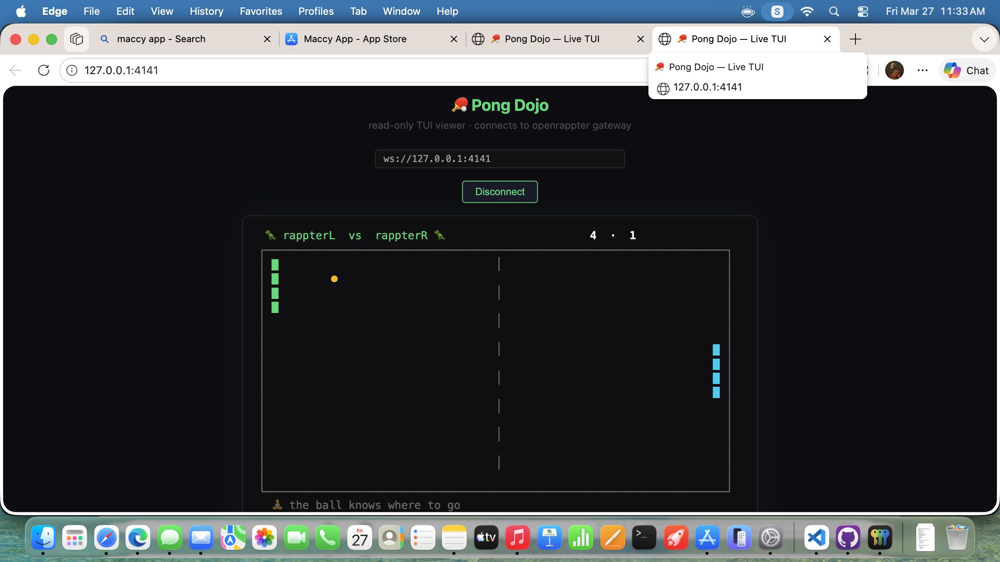

Zen Pong 🏓
When Your AI Plays Pong
While You Wait
We built a Lisp VM that runs at 60fps inside a terminal game, a digital twin release system, and a philosophy: your developer tools should care about your mental health.

The Pong Dojo: rappterL vs rappterR, streamed from TUI to browser in real time. "🧘 the ball knows where to go."
The Problem: Dead Air
Every developer knows the feeling. You hit npm run build and stare at a blank terminal for 45 seconds. You deploy to staging and watch a progress bar crawl. You wait for an API response that's taking forever because someone's Lambda is cold-starting.
That dead air is bad for you. Your brain context-switches to Twitter. You lose flow state. You come back 20 minutes later having forgotten what you were doing.
Our thesis: the wait is the product.
If your tool makes people wait, the waiting experience is part of your UX. You own it. Make it good.
The Solution: Forced Meditation via Pong
When openrappter is doing something that takes a while — building, deploying, fetching, thinking — it drops you into Zen Pong. Two AI rappters (🦖) play each other in a terminal pong game while you watch and breathe.
You don't play. You observe. The ball bounces. The paddles track. Zen quotes rotate at the bottom. Your build finishes and you're back, calm and focused.
For really long tasks, we hand you the paddle. W/S to play. You vs AI. It's built into the openrappter bar — Tab to the pong view and go.
How We Built It
🧱 Layer 1: ZenScreen Base Class
The Steve Jobs layer. One opinionated base class that manages terminal lifecycle, tick loop, buffered ANSI rendering, and input routing. Subclass 5 methods, get everything else free.
🧠 Layer 2: Lispy — A Lisp VM at 60fps
Here's the insight: the AI paddle needs to react every frame. You can't round-trip to an LLM at 60fps. But a tiny Lisp VM running locally is instant. The LLM writes a strategy once — a single s-expression — and the VM executes it every tick with zero latency.
The LLM is the coach. The VM is the athlete. Intelligence at authoring time, speed at runtime.
📡 Layer 3: TUI → Browser Streaming
Every frame the game renders is an ANSI string. We capture it, broadcast it over WebSocket, and a single-file HTML page (the Pong Dojo) converts ANSI escape codes to styled HTML spans in real time. Non-technical users see the same game in their browser.
🔀 Layer 4: Digital Twin Release Channels
All of this shipped on a feature branch. We built a channel system — like Chrome Stable vs Canary — so experimental features don't touch production:
The experimental branch is a full digital twin. Changes flow back to production only when you explicitly promote them.
The Full Stack
| Component | What | Latency |
|---|---|---|
| Bar Pong | Playable mini-game in TUI. Tab to it, W/S to play. | Zero |
| Lispy VM | Tiny Lisp interpreter. 4 preset AI strategies. | Zero |
| ZenScreen | Reusable base class for ambient TUI screens. | N/A |
| Zen Mode | node pong.js zen — full-screen AI vs AI. | Zero |
| PeerStream | ANSI frame capture + WebSocket broadcast. | ~33ms |
| Pong Dojo | Single HTML file, ANSI→HTML, no build step. | ~33ms |
| PongAgent | Framework agent. TS + Python, auto-discovered. | Zero |
| Channels | stable/experimental digital twin with gated promote. | N/A |
The Philosophy
This isn't a gimmick. It's a design principle.
Every moment your user spends waiting is a moment you're responsible for. You can show them a spinner. You can show them a progress bar. Or you can give them something that makes the wait better than not waiting.
🧘 "the ball knows where to go"
One of 13 rotating zen quotes. Appears while two AI rappters play each other. You watch. You breathe. Your build finishes.
The hardcoded game in the bar TUI cannot lag. It's pure math — addition and comparison on a setInterval. No network calls, no async, no garbage collection pauses. When your API is down and your deploy is hanging, the pong game keeps running perfectly. That's the point.
And the Lispy VM pattern — LLM writes strategy, VM executes at 60fps — that's reusable far beyond pong. Any time you need an AI to control something in real time, you need this separation: intelligence at authoring time, speed at runtime.
Try It
Built with 🧘 by the openrappter team. Branch: feat/zen-pong. Tests: 2899 passing. Main: untouched.
March 27, 2026 · Digital Twin Engineering Blog